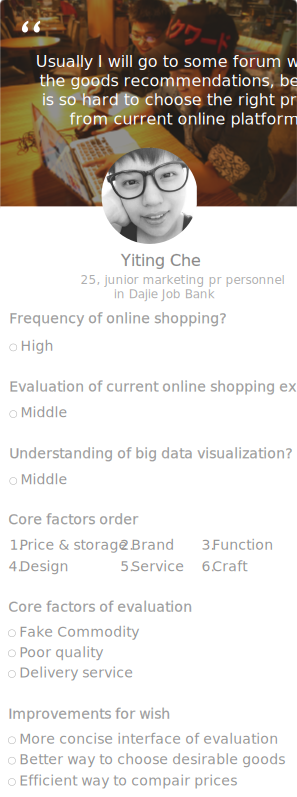

The dissertation project focused on how to redesign the user flows and improve the online shopping experience by big data visualization. The visualization technique is based on D3. A challenge was to dig out the real pain point from the users' shopping behavior and answers of their predilections. Through meticulous analysis I concluded there were two major shopping predilections: 1. users would check several goods for grabbing the vague understanding of favorable funtions' prices, and they would decide which goods to buy based on the average price.
Role
Undergraduate dissertation
Tool
Illustrator
Photoshop
D3
Aftereffect
Date
Feb 2015-
July 2015
Project Overview
Where does the design come from, where does it go?
Interviews
How painpoints of online shopping were reframed

Observation
I studied the records of interviewees shopping trace, and concluded the motivations of their pivotal
shopping decisions. I then discussed with my tutor and stated several important factors of their shopping choices.
They are cost performance(memory capacity/price), function, brand, design, service, and craft.
Persona
Who we target and optimize for
There are serveral key factors which influence the purchase decision
of online shoppers in the harddrive buying example. They are cost performance
(memory capacity/price), function, brand, design, service, and craft.
Analysis
The core factors of decision making
Wireframe
Design Iteration
Where evolution happens
After tested different kinds of D3 charts to find out the best charts for particular functions.
For example, fingering out the relation between function, product and price, understanding the
relation between comment, key word, and product.
Data Visualization UI
Where beauty of data shocks
After researching for suitable D3 charts for certain functions, the design of V-shop
emerged, where the impact of big data and funtions were balanced.
Search items for purchasing
Users can type in the keyword they want to buy and have a brand new experinece on big data visualization shopping.
Tree chart(brand oriented)
Users can conform their shopping predilection by using the tree chart. It lists the information by brand, model, function, and price. Users can select their desirable items and refer to the multidimentional scale(price & sales) at the left bottom.
Sandel & bullet chart(function oriented)
Users can choose the functions they care about and check the average prices. At the same time they can observe the connection between function, moedl and price. Above the chart there are the qualified goods, users can also modify the goods and thus jump to the appraise checking phase.
Chord chart(comment oriented)
Users can see the connection and trend between comments and goods. With this chord chart users can quickly understand the overall comment status and filter their shopping choices.
Final result
Users can filter the goods with different brand, and it is convenient to click the goods and jump to JingDong for purchasing.